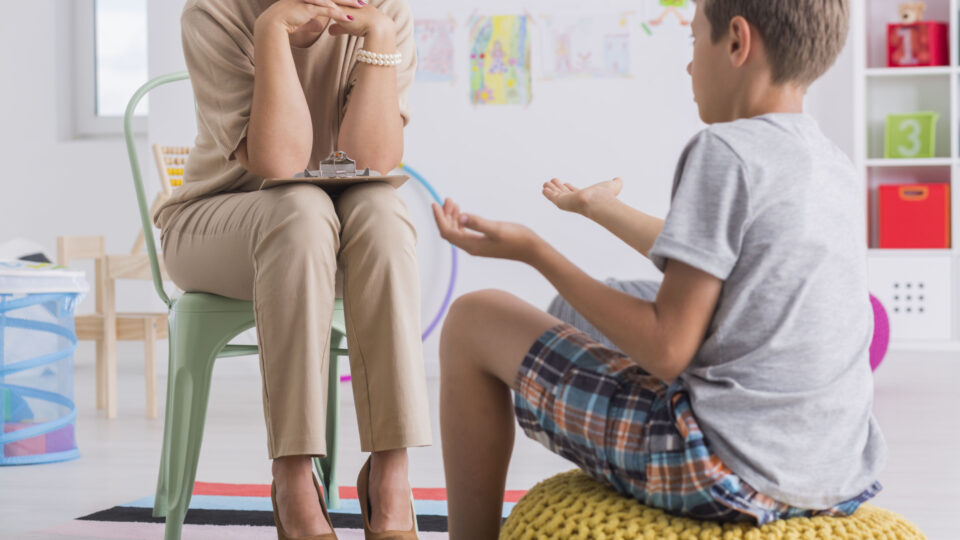
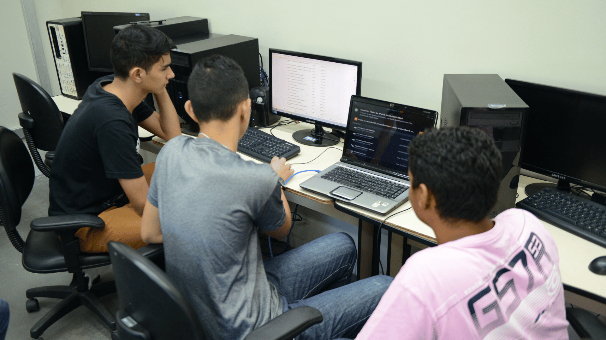
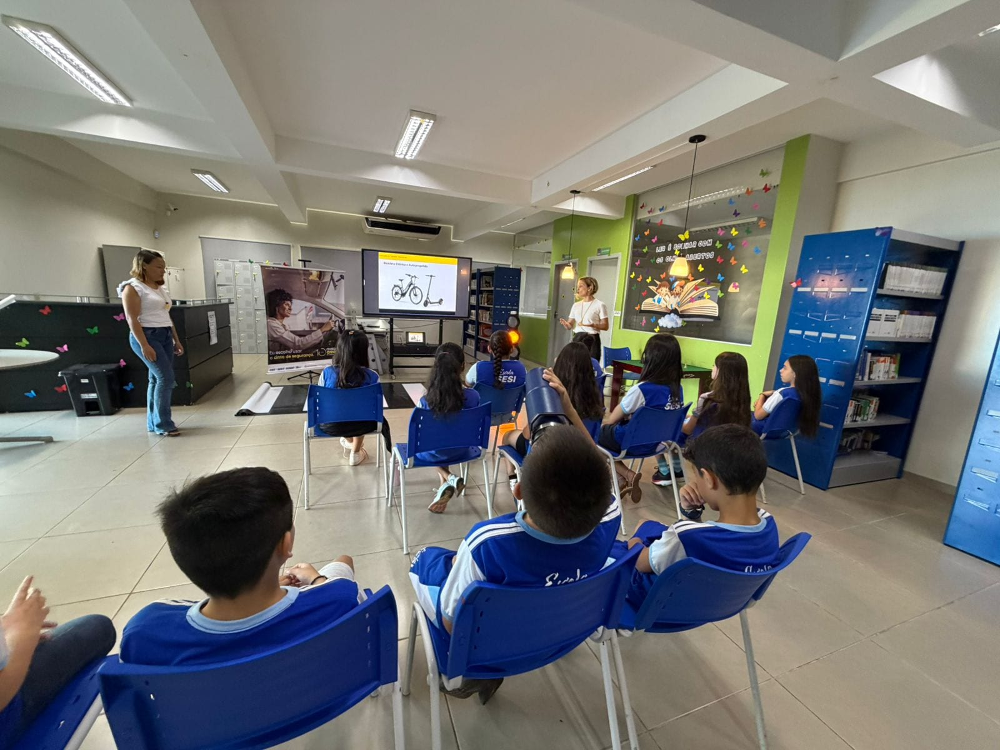
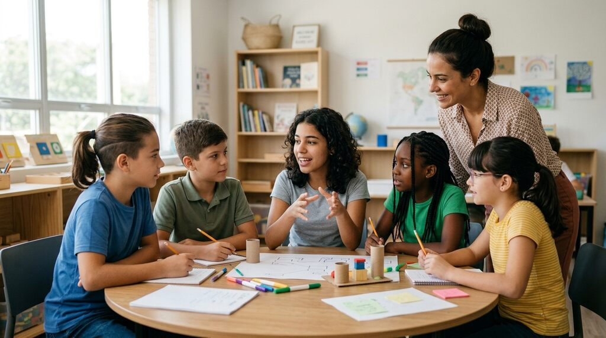

Projetos e Atividades
Na LAR, o acolhimento também envolve criar oportunidades para que crianças e adolescentes possam desenvolver suas habilidades, descobrir interesses e construir novas perspectivas para o futuro.

Apoio Psicológico
Projeto ativoO acompanhamento psicológico busca oferecer suporte às crianças e adolescentes, considerando suas experiências, necessidades emocionais e seu processo de desenvolvimento.
O objetivo é proporcionar um espaço de escuta, acolhimento e acompanhamento, contribuindo para que cada pessoa possa lidar com suas experiências e desenvolver recursos para sua trajetória.
Orientação Vocacional
Projeto ativoA orientação vocacional auxilia os adolescentes na identificação de interesses, habilidades e áreas com as quais possam se identificar.
A proposta é ajudá-los a conhecer diferentes possibilidades de formação e atuação profissional, contribuindo para escolhas mais conscientes sobre seus próximos passos.

Desenvolvimento Profissional
Projeto ativoPor meio de oficinas e atividades práticas, a LAR busca contribuir para o desenvolvimento de conhecimentos e habilidades importantes para a vida profissional.
As atividades podem abordar diferentes temas, permitindo que os adolescentes tenham contato com novas áreas e desenvolvam competências para seus projetos de futuro.

Palestras e Atividades
Projeto ativoPalestras, encontros e atividades educativas podem ampliar o contato dos adolescentes com diferentes conhecimentos, experiências e perspectivas.
A participação de profissionais e convidados também pode proporcionar momentos de troca, aprendizado e descoberta de novas possibilidades.

Preparação para o Futuro
Projeto ativoAs diferentes atividades desenvolvidas pela LAR buscam estimular a autonomia, a descoberta de habilidades e a construção de perspectivas para o futuro.
Dessa forma, o desenvolvimento pessoal e profissional faz parte de um processo contínuo de preparação para novas etapas da vida.
Faça Parte
Existem diferentes formas de contribuir com o trabalho da LAR. Cada participação pode ajudar a ampliar as oportunidades oferecidas às crianças e aos adolescentes.
Doações
As doações podem contribuir para a manutenção das atividades e para a aquisição de recursos necessários ao acolhimento e desenvolvimento das crianças e adolescentes.
Cada contribuição deve ser destinada de acordo com as necessidades da organização.
Voluntariado
Pessoas interessadas podem contribuir com seu tempo, conhecimentos e habilidades por meio de atividades voluntárias.
O trabalho voluntário pode envolver apoio em atividades, oficinas e outras ações desenvolvidas pela LAR.
Palestras e Oficinas
Profissionais e pessoas com conhecimentos em diferentes áreas podem contribuir compartilhando experiências por meio de palestras, oficinas e atividades educativas.
Essas iniciativas podem ampliar o contato dos adolescentes com diferentes áreas de conhecimento e possibilidades profissionais.
Profissionais e Parceiros
A colaboração de profissionais e parceiros pode contribuir para o desenvolvimento de atividades voltadas ao cuidado, à educação e à preparação para o futuro.
Diferentes formas de parceria podem ser avaliadas de acordo com as necessidades e os projetos da LAR.
Quer fazer parte?
Entre em contato com a LAR para conhecer as possibilidades de participação e descobrir como você pode contribuir.
Entre em contato